직업상담사-2급 (2020-09-26 기출문제)
1과목: 직업상담학
1. 행동적 상담기법 중 불안을 감소시키는 방법으로 이완법과 함께 쓰이는 것은?
- 강화
- 변별학습
- 사회적 모델링
- 체계적 둔감화
(정답률: 89%)

2. 내담자의 인지적 명확성을 사정할 때 고려할 사항이 아닌 것은?
- 직장을 처음 구하는 사람과 직업전환을 하는 사람의 직업상담에 관한 접근은 동일하게 해야 한다.
- 직장인으로서의 역할이 다른 생애 역할과 복잡하게 얽혀있는 경우 생애 역할을 함께 고려한다.
- 직업상담에서는 내담자의 동기를 고려하여 상담이 이루어져야 한다.
- 우울증과 같은 심리적 문제로 인지적 명확성이 부족한 경우 진로문제에 대한 결정은 당분간 보류하는 것이 좋다.
(정답률: 84%)
3. 6개의 생각하는 모자(six thinking hats)는 직업상담의 중재와 관련된 단계들 중 무엇을 위한 것인가?
- 직업정보의 수집
- 의사결정의 촉진
- 보유기술의 파악
- 시간관의 개선
(정답률: 80%)
4. 정신역동적 진로상담에서 보딘(Bordin)이 제시한 진단범주에 포함되지 않는 것은?
- 독립성
- 자아갈등
- 정보의 부족
- 진로선택에 따르는 불안
(정답률: 74%)
5. 레벤슨(Levenson)아 제시한 직업상담사의 반윤리적 행동에 해당하는 것은?
- 상담사의 능력 내에서 내담자의 문제를 다룬다.
- 내담자에게 부당한 광고를 하지 않는다.
- 적절한 상담비용을 청구한다.
- 직업상담사에 대한 내담자의 의존성을 최대화한다.
(정답률: 83%)
6. 내담자의 정보를 수집하고 행동을 이해하여 해석할 때 내담자가 다음과 같은 반응을 보일 경우 사용하는 상담기법은?
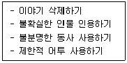
- 전이된 오류 정정하기
- 분류 및 재구성하기
- 왜곡된 사고 확인하기
- 저항감 재인식하기
(정답률: 62%)
7. 수퍼(Super)의 여성 진로유형 중 학교졸업 후에도 직업을 갖지 않는 진로유형은?
- 안정적인 가사 진로유형
- 전통적인 진로유형
- 단절 진로유형
- 불안정 진로유형
(정답률: 63%)
8. 패터슨(Patterson) 등의 진로정보처리 이론에서 제시된 진로상담 과정에 포함되지 않는 것은?
- 준비
- 분석
- 종합
- 실행
(정답률: 66%)
9. 다음 중 부처(Butcher)가 제안한 집단직업상담을 위한 3단계 모형에 해당하지 않는 것은?
- 탐색단계
- 계획단계
- 전환단계
- 행동단계
(정답률: 81%)
10. 포괄적 직업상담에서 내담자가 지닌 직업상의 문제를 가려내기 위해 실시하는 변별적 진단 검사와 가장 거리가 먼 것은?
- 직업성숙도 검사
- 직업적성 검사
- 직업흥미 검사
- 경력개발 검사
(정답률: 79%)
11. 다음 중 윌리암슨(Williamson)이 분류한 진로선택의 문제에 해당하지 않는 것은?
- 직업선택의 확신부족
- 현명하지 못한 직업선택
- 가치와 흥미의 불일치
- 직업 무선택
(정답률: 63%)
12. 직업카드분류(OCS)는 내담자의 어떤 특성을 사정하기 위한 도구인가?
- 흥미사정
- 가치사정
- 동기사정
- 성격사정
(정답률: 82%)
13. 게슈탈트 상담이론에서 주장하는 접촉-경계의 혼란을 일으키는 현상에 대한 설명으로 옳지 않은 것은?
- 투사(projection)는 자신의 생각이나 요구, 감정 등을 타인의 것으로 지각하는 것을 말한다.
- 반전(retroflection)은 다른 사람이나 환경에 대하여 하고 싶은 행동을 자기 자신에게 하는 것을 말한다.
- 융합(confluence)은 밀접한 관계에 있는 사람들이 어떤 갈등이나 불일치도 용납하지 않는 의존적 관계를 말한다.
- 편향(deflection)은 외고집으로 다른 사람의 의견을 전혀 받아들이지 않고 자기 틀에서만 사고하고 행동하는 것을 말한다.
(정답률: 46%)
14. 내담자 중심상담 이론에 관한 설명으로 틀린 것은?
- Rogers의 상담경험_에서 비롯된 이론이다.
- 상담의 기본목표는 개인이 일관된 자아개념을 가지고 자신의 기능을 최대로 발휘하는 사람이 되도록 도울 수 있는 환경을 제공하는 것이다.
- 특정 기법을 사용하기보다는 내담자와 상담자 간의 안전하고 허용적인 나와 너의 관계를 중시한다.
- 상담기법으로 적극적 경청, 감정의 반영, 명료화, 공감적 이해, 내담자 정보탐색, 조언, 설득, 가르치기 등이 이용된다.
(정답률: 71%)
15. 내담자의 정보와 행동을 이해하고 해석할 때기본이 되는 상담기법 중 '가정 사용하기'에 해당하는 질문이 아닌 것은?
- 당신은 자신의 일이 마음에 듭니까?
- 당신의 직업에서 마음에 드는 것은 어떤 것들입니까?
- 당신의 직업에서 좋아하지 않는 것은 무엇입니까?
- 어떤 사람이 상사가 되었으면 좋겠습니까?
(정답률: 71%)
16. 상담 및 심리치료적 관계 형성에 방해되는 상담자의 행동은?
- 수용
- 감정의 반영
- 도덕적 판단
- 일관성
(정답률: 70%)
17. 진로시간전망 검사 중 코틀(Cottle)이 제시한 원형검사에서 원의 크기가 나타내는 것은?
- 과거, 현재, 미래
- 방향성, 변별성, 통합성
- 시간차원에 대한 상대적 친밀감
- 시간차원의 연결 구조
(정답률: 71%)
18. 아들러(Adler)의 개인주의 상담에 관한 설명으로 옳은 것은?
- 내담자의 잘못된 가치보다는 잘못된 행동을 수정하는데 초점을 둔다.
- 상담자는 조력자의 역할을 하며 내담자가 상담을 주도적으로니 이끈다.
- 상담과정은 사건의 객관성보다는 주관적 지각과 해석을 중시한다.
- 내담자의 사회적 관심보다는 개인적 열등감의 극복을 궁극적 목표로 삼는다.
(정답률: 56%)
19. 정신분석에서 제시하는 불안의 유형을 모두 고른 것은?
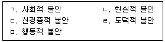
- ㄱ, ㄴ, ㄷ
- ㄱ, ㄴ, ㅁ
- ㄱ, ㄹ, ㅁ
- ㄴ, ㄷ, ㄹ
(정답률: 75%)
20. 다음 설명에 해당하는 집단상담 기법은?
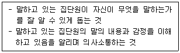
- 해석하기
- 연결짓기
- 반영하기
- 명료화하기
(정답률: 52%)
2과목: 직업심리학
21. 다음의 내용이 포함된 직무분석의 방법은?
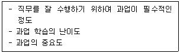
- 직무요소 질문지
- 기능적 직무분석
- 직책분석 질문지
- 과업 질문지
(정답률: 62%)
22. 긴즈버그(Ginzberg)가 제시한 진로발달 단계가 아닌 것은?
- 환상기
- 잠정기
- 현실기
- 적응기
(정답률: 70%)
23. 적성검사의 결과에서 중앙값이 의미하는 것은?
- 100점 만점에서 50점을 획득하였다.
- 자신이 얻을 수 있는 최고 점수를 얻었다.
- 적성검사에서 도달해야 할 준거점수를 얻었다.
- 같은 또래 집단의 점수분포에서 평균 점수를 얻었다.
(정답률: 68%)
24. 홀랜드(Holland)의 진로발달이론이 기초하고 있는 가정에 관한 설명 중 틀린 것은?
- 사람들의 성격은 6가지 유형 중의 하나로 분류될 수 있다.
- 직업 환경은 6가지 유형의 하나로 분류될 수 있다.
- 개인의 행동은 성격에 의해 결정된다.
- 사람들은 자신의 능력을 발휘하고 태도와 가치를 표현할 수 있는 환경을 찾는다.
(정답률: 57%)
25. 셀리에(Selye)가 제시한 스트레스 반응 단계를 순서대로 바르게 나열한 것은?
- 소진 → 저항 → 경고
- 저항 → 경고 → 소진
- 소진 → 경고 → 저항
- 경고 → 저항 → 소진
(정답률: 75%)
26. 사회인지적 관점의 진로이론(SCCT)의세 가지 중심적인 변인이 아닌 것은?
- 자기효능감
- 자기 보호
- 결과 기대
- 개인적 목표
(정답률: 49%)
27. 직업적응이론에서 개인의 만족, 조직의 만족, 적응을 매개하는 적응유형 변인은?
- 우연(happenstance)
- 타협(compromise)
- 적응도(adaptability)
- 인내력(perseverance)
(정답률: 42%)
28. 직업에 관련된 흥미를 측정하는 직업흥미 검사가 아닌 것은?
- Strong Interest Inventory
- Vocational Preference Inventory
- Kuder Interest Inventory
- California Psychological Inventory
(정답률: 73%)
29. 스트레스의 예방 및 대처 방안으로 틀린 것은?
- 가치관을 전환해야 한다.
- 과정중심적 사고방식에서 목표지향적 초고속 심리로 전환해야 한다.
- 균형있는 생활을 해야 한다.
- 취미·오락을 통해 생활 장면을 전환하는 활동을 규칙적으로 해야 한다.
(정답률: 79%)
30. 개인의 욕구와 능력을 환경의 요구사항과 관련시켜 진로행동을 설명하고, 개인과 환경 간의 상호작용을 통한 욕구충족을 강조하는 이론은?
- 가치중심 이론
- 특성요인 이론
- 사회학습 이론
- 직업적응 이론
(정답률: 39%)
31. 미네소타 직업가치 질문지에서 측정하는 6개의 가치요인이 아닌 것은?
- 성취
- 지위
- 권력
- 이타주의
(정답률: 56%)
32. 다음과 같은 정의를 가진 직업선택 문제는?
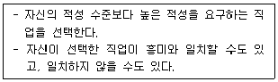
- 부적응된(maladjusted)
- 우유부단한(undecided)
- 비현실적인(unrealistic)
- 강요된(forced)
(정답률: 74%)
33. 다음 중 질문지법의 장점이 아닌 것은?
- 부가적인 정보를 얻을 수 있다.
- 시간과 비용이 적게 든다.
- 다수의 응답자가 참여할 수 있다.
- 자료 수집이 용이하다.
(정답률: 72%)
34. 조직 감축에서 살아남은 구성원들이 조직에 대해 보이는 전형적인 반응은?
- 살아남은 구성원들은 조직에 대해 높은 신뢰감을 가지고 있다.
- 더 많은 일을 해야 하고, 종종 불이익도 감수한다.
- 살아남은 구성원들은 다른 직무나 낮은 수준의 직무로 이동하는 것을 거부한다.
- 조직 감축에서 살아남은데 만족하며 조직 몰입을 더 많이 한다.
(정답률: 77%)
35. 다음 설명에 해당하는 타당도의 종류는?
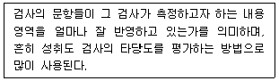
- 준거 타당도
- 내용 타당도
- 예언 타당도
- 공인 타당도
(정답률: 68%)
36. 톨버트(Tolbert)가 제시한 개인의 진로발달에 영향을 주는 요인이 아닌 것은?
- 교육 정도(educational degree)
- 직업 흥미(occupational interest)
- 직업 전망(occupational prospective)
- 가정·성별·인종(family·sex·race)
(정답률: 63%)
37. 일반적성검사(GATB)에서 측정하는 직업적성이 아닌 것은?
- 손가락 정교성
- 언어 적성
- 사무 지각
- 과학 적성
(정답률: 67%)
38. 경력개발 프로그램 중 종업원 개발 프로그램에 해당하지 않는 것은?
- 훈련 프로그램
- 평가 프로그램
- 후견인 프로그램
- 직무순환
(정답률: 66%)
39. 신뢰도 계수에 관한 설명으로 틀린 것은?
- 신뢰도 계수는 개인차가 클수록 커진다.
- 신뢰도 계수는 문항 수가 증가함에 따라 정비례하여 커진다.
- 신뢰도 계수는 신뢰도 추정방법에 따라서 달라질 수 있다.
- 신뢰도 계수는 검사의 일관성을 보여주는 값이다.
(정답률: 64%)
40. 직업발달이론 중 매슬로우(Maslow)의 욕구위계 이론에 기초하여 유아기의 경험과 직업선택에 관한 5가지 가설을 수립한 학자는?
- 로(Roe)
- 갓프레드슨(Gottfredson)
- 홀랜드(Holland)
- 터크만(Tuckman)
(정답률: 73%)
3과목: 직업정보론
41. 한국표준산업분류(제10차)에서 통계단위의 산업 결정방법에 관한 설명으로 틀린 것은?
- 생산단위의 산업활동은 그 생산단위가 수행하는 주된 산업활동의 종류에 따라 결정된다.
- 단일사업체의 보조단위는 그 사업체의 일개 부서로 포함한다.
- 계절에 따라 정기적으로 산업을 달리하는 사업체의 경우에는 조사시점에 경영하는 사업으로 분류된다.
- 설립중인 사업체는 개시하는 산업활동에 따라 결정한다.
(정답률: 69%)
42. 다음의 주요 업무를 수행하는 사업주 직업능력개발훈련기관은?
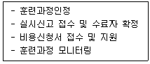
- 전국고용센터
- 한국고용정보원
- 근로복지공단
- 한국산업인력공단
(정답률: 53%)
43. 직업선택 결정모형을 기술적 직업결정모형과 처방적 직업결정모형으로 분류할 때 기술적 직업결정모형에 해당하지 않는 것은?
- 브룸(Vroom)의 모형
- 플레처(Fletcher)외 모형
- 겔라트(Gelatt)의 모형
- 타이드만과 오하라(Tideman & O'Hara)의 모형
(정답률: 49%)
44. 한국표준산업분류(제10차)에서 산업분류의 적용원칙에 관한 설명으로 틀린 것은?
- 생산단위는 산출물 뿐만 아니라 투입물과 생산공정 등을 함께 고려하여 그들의 활동을 가장 정확하게 설명된 항목으로 분류해야 한다.
- 복합적인 활동단위는 우선적으로 최상급 분류단계(대분류)를 정확히 결정하고, 순차적으로 중, 소, 세, 세세분류 단계 항목을 결정해야 한다.
- 공식적 생산물과 비공식적 생산물, 합법적 생산물과 불법적인 생산물을 달리 분류해야 한다.
- 산업활동이 결합되어 있는 경우에는 그 활동단위의 주된 활동에 따라서 분류해야 한다.
(정답률: 69%)
45. 다음은 직업정보 수집을 위한 자료수잡방법을 비교한 표이다. ( )에 알맞은 것은?
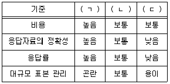
- ㄱ : 전화조사, ㄴ : 우편조사, ㄷ : 면접조사
- ㄱ : 면접조사, ㄴ : 우편조사, ㄷ : 전화조사
- ㄱ : 면접조사, ㄴ : 전화조사, ㄷ : 우편조사
- ㄱ : 전화조사, ㄴ : 면접조사, ㄷ : 우편조사
(정답률: 74%)
46. 한국표준산업분류(제10차)의 분류기준이 아닌 것은?
- 산출물의 특성
- 투입물의 특성
- 생산단위의 활동형태
- 생산활동의 일반적인 결합형태
(정답률: 55%)
47. 한국표준직업분류(7차) 직업분류 원칙 중 다수직업 종사자의 분류 원직에 해당하지 않는 것은?
- 수입 우선의 원칙
- 취업시간 우선의 원칙
- 조사시 최근의 직업 원칙
- 생산업무 우선 원칙
(정답률: 59%)
48. 통계청 경제활동인구조사의 주요 용어에 관한 설명으로 틀린 것은?
- 경제활동인구 : 만 15세 이상 인구 중 취업자와 실업자를 말한다.
- 육아 : 조사대상주간에 주로 미취학자녀(초등학교 입학전)를 돌보기 위하여 집에 있는 경우가 해당한다.
- 취업준비 : 학교나 학원에 가지 않고 혼자 집이나 도서실에서 취업을 준비하는 경우가 해당된다.
- 자영업자 : 고용원이 없는 자영업자를 제외한 고용원이 있는 자영업자를 말한다.
(정답률: 66%)
49. 국가기술자격 국제의료관광코디네이터의 응시자격으로 틀린 것은? (단, 공인어학성적 기준요건을 충족한 것으로 가정한다.)
- 보건의료 또는 관광분야의 관련학과로서 대학졸업자 또는 졸업예정자
- 2년제 전문대학 관련학과 졸업자 등으로서 졸업 후 보건의료 또는 관광분야에서 2년 이상 실무에 종사한 사람
- 관련 자격증(의사, 간호사, 보건교육사, 관광통역안내사, 컨벤션기획사 1·2급)을 취득한 사람
- 보건의료 또는 관광분야에서 3년 이상 실무에 종사한 사람
(정답률: 47%)
50. 한국표준직업분류(7차)에서 직업의 성립조건에 대한 설명으로 옳은 것은?
- 사회복지시설 수용자의 시설 내 경제활동은 직업으로 보지 않는다.
- 이자나 주식배당으로 자산 수입이 있는 경우는 직업으로 본다.
- 자기 집의 가사 활동도 직업으로 본다.
- 속박된 상태에서의 제반활동이 경제성이나 계속성이 있으면 직업으로 본다.
(정답률: 62%)
51. 한국직업사전에서 사람과 관련된 직무기능 중 “정책을 수립하거나 의사결정을 하기 위해 생각이나 정보, 의견 등을 교환한다”와 관련 있는 것은?
- 자문
- 협의
- 설득
- 감독
(정답률: 66%)
52. 다음에 해당하는 고용 관련 지원제도는?
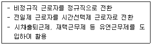
- 고용창출장려금
- 고용안정장려금
- 고용유지지원금
- 고용환경개선지원
(정답률: 58%)
53. 구직자에게 일정한 금액을 지원하여 그 범위 이내에서 직업능력개발훈련에 참여할 수 있도록 하고, 훈련이력 등을 개인별로 통합관리하는 제도는?
- 사업주훈련
- 일학습병행제
- 국민내일배움카드
- 청년취업아카데미
(정답률: 77%)
54. 공공직업정보의 일반적인 특성에 해당되는 것은?
- 필요한 시기에 최대한 활용되도록 한시적으로 신속하게 생산·제공된다.
- 특정 분야 및 대상에 국한되지 않고 전체 산업의 직종을 대상으로 한다.
- 정보 생산자의 임의적 기준에 따라 관심이나 흥미를 유도할 수 있도록 해당 직업을 분류한다.
- 유료로 제공된다.
(정답률: 75%)
55. 직업정보를 사용하는 목적과 가장 거리가 먼 것은?
- 직업정보를 통해 근로생애를 설계할 수 있다.
- 직업정보를 통해 전에 알지 못했던 직업세계와 직업비전에 대해 인식할 수 있다.
- 직업정보를 통해 과거의 직업탐색, 은퇴 후 취미활동 등에 필요한 정보를 얻을 수 있다.
- 직업정보를 통해 일을 하려는 동기를 부여받을 수 있다.
(정답률: 71%)
56. 국가 직업훈련에 관한 정보를 검색할 수 있는 정보망은?
- JT-Net
- HRD-Net
- T-Net
- Training-Net
(정답률: 77%)
57. 워크넷의 청소년 대상 심리검사의 종류 증지필방법으로 실시할 수 없는 것은?
- 청소년 직업흥미검사
- 고교계열 흥미검사
- 고등학생 적성검사
- 청소년 진로발달검사
(정답률: 61%)
58. 2019 한국직업전망의 직업별 일자리 전망 결과에서 '다소 증가'로 전망되지 않은 것은?
- 항공기조종사
- 경찰관
- 기자
- 손해사정사
(정답률: 50%)
59. 워크넷에서 제공하는 학과정보 중 자연계열에 해당하는 학과는?
- 도시공학과
- 지능로봇과
- 바이오산업공학과
- 바이오섬유소재학과
(정답률: 52%)
60. 국가기술자격 종목과 해당 직무분야 연결이 옳지 않은 갓은?
- 임상심리사1급 - 보건·의료
- 텔레마케팅관리사 - 경영·회계·사무
- 직업상담사1급 - 사회복지·종교
- 어로산업기사 - 농림어업
(정답률: 65%)
4과목: 노동시장론
61. 완전경쟁시장의 치킨매장에서 치킨 1마리를 14000원에 팔고 있다. 그리고 종업원을 시간당 7000원에 고용하고 있다. 이 매장이 이윤을 극대화하기 위해서는 노동의 한계생산이 무엇과 같아질 때까지 고용을 늘려야 하는가?
- 시간당 치킨 1/2마리
- 시간당 치킨 1마리
- 시간당 치킨 2마리
- 시간당 치킨 4마리
(정답률: 53%)
62. 다음 중 생산성을 향상시키는 요인과 가장 거리가 먼 것은?
- 노동조합 조합원 수의 증가
- 자본 절약적 기술혁신
- 자본의 질적 중가
- 노동의 질적 향상
(정답률: 66%)
63. 기업은 조합원이 아닌 노동자를 채용할 수 있고 채용된 근로자가 노동조합 가입 여부에 상관없이 기업의 종업원으로 근무하는데 아무 제약이 없는 숍제도는?
- 클로즈드 숍
- 유니온 숍
- 에이전시 숍
- 오픈 숍
(정답률: 71%)
64. 준고정적 노동비용에 해당하지 않는 것은?
- 퇴직금
- 건강보험
- 유급휴가
- 초과근무수당
(정답률: 53%)
65. 성과급제도의 장점으로 가장 적합한 것은?
- 직원 간 화합이 용이하다.
- 근로의 능률을 자극할 수 있다.
- 임금의 계산이 간편하다.
- 확정적 임금이 보장된다.
(정답률: 76%)
66. 파업의 경제적 손실에 대한 설명으로 틀린 것은?
- 노동조합 측 노동소득의 순상실분은 해당기업에서의 임금소득의 상실보다 훨씬 적을 수 있다.
- 사용자 이윤의 순감소분은 직접적인 생산중단에서 오는 것보다 항상 더 크다.
- 파업에 따르는 사회적 비용은 제조업보다 서비스업에서 더 큰 것이 보통이다.
- 파업에 따르는 생산량감소는 타산업의 생산량증가로 보충하기도 한다.
(정답률: 57%)
67. 근로기준법에 경영상 이유에 의한 해고, 탄력적 근로시간제 등의 조항이 등장하고 파견근로자 보호 등에 관한 법률이 제정된 이유로 가장 타당한 것은?
- 획일화되는 사회에 적응하기 위함이다.
- 노동조합의 전투성을 진정시키기 위함이다.
- 외부자보다는 내부자를 보호하기 위함이다.
- 불확실한 시장상황에 기업이 신속하게 대응할 수 있도록 하기 위함이다.
(정답률: 64%)
68. 기업의 종업원주식소유제 또는 종업원지주제 도입의 목적이 아닌 것은?
- 새로운 일자리 창출
- 기업재무구조의 건전화
- 종업원에 의한 기업인수로 고용안정 도모
- 공격적 기업 인수 및 합병에 대한 효과적 방어수단으로 활용
(정답률: 68%)
69. 효율임금가설에 대한 설명으로 틀린 것은?
- 효율임금은 생산의 임금탄력성이 1이 되는 점에서 결정된다.
- 효율임금은 전문직과 같이 노동자들의 생산성을 관측하기 어려운 경우 채택될 가능성이 높다.
- 효율임금은 경쟁임금수준보다 높으므로 개별기업의 이윤극대화를 가져다주는 임금이라 할 수 없다.
- 효율임금은 임금인상에 따른 한계생산이 임금의 평균생산과 일치하는 점에서 결정된다.
(정답률: 52%)
70. 마르크스(K. Marx)에 의하면 기술진보로 인하여 상대적 과잉인구가 발생하게 되는데 이를 무슨 실업이라 하는가?
- 마찰적 실업
- 구조적 실업
- 기술적 실업
- 경기적 실업
(정답률: 58%)
71. 노동의 공급곡선에 대한 설명 중 틀린 것은?
- 일정 임금수준 이상이 될 때 노동의 공급곡선은 후방굴절부분을 가진다.
- 임금과 노동시간 사이에 음(-)의 관계가 존재할 경우 임금률의 변화 시 소득효과가 대체효과보다 작다.
- 임금과 노동시간과의 관계이다.
- 노동공급의 증가율이 임금상승률보다 높다면 노동공급은 탄력적이다.
(정답률: 57%)
72. 노동시장과 실업에 관한 설명으로 틀린 것은?
- 최저임금제는 비숙련 노동자에게 해당된다.
- 해고자, 취업대기자, 구직포기자는 실업자에 포함된다.
- 효율성임금은 노동자의 이직을 막기 위해 시장균형 임금보다 높다.
- 최저임금, 노동조합 또는 직업탐색 등이 실업의 원인에 포함된다.
(정답률: 49%)
73. 내부노동시장의 형성요인이 아닌 것은?
- 기술변화에 따른 산업구조 변화
- 장기근속 가능성
- 위계적 직무서열
- 기능의 특수성
(정답률: 54%)
74. 임금의 경제적 기능에 대한 설명으로 틀린 것은?(오류 신고가 접수된 문제입니다. 반드시 정답과 해설을 확인하시기 바랍니다.)
- 임금결정에서 기업주는 동일노동 동일임금을 선호하고 노동자는 동일노동 차등임금을 선호한다.
- 기업주에게는 실질임금이 중요성을 가지나 노동자에게는 명목임금이 중요하다.
- 기업주에서 본 임금과 노동자 입장에서 본 임금의 성격상 상호배반적인 관계를 갖는다.
- 임금은 인적자본에 대한 투자수요결정의 변수로서 중요한 역할을 한다.
(정답률: 49%)
75. 분단노동시장(segmented labor market) 가설의 출현배경과 가장 거리가 먼 것은?
- 능력분포와 소득분포의 상이
- 교육개선에 의한 빈곤퇴치 실패
- 소수인종에 대한 현실적 차별
- 동질의 노동에 동일한 임금
(정답률: 64%)
76. 경제활동인구조사에서 취업자로 분류되는 사람은?
- 명예퇴직을 하여 연금을 받고 있는 전직 공무원
- 하루 3시간씩 구직활동을 하고 있는 전직 은행원
- 하루 1시간씩 학교 부근 식당에서 아르바이트를 하고 있는 대학생
- 하루 2시간씩 남편의 상점에서 무급으로 일하는 기혼여성
(정답률: 70%)
77. 다음 중 구조적 실업에 대한 대책과 가장 거리가 먼 것은?
- 경기활성화
- 직업전환교육
- 이주에 대한 보조금
- 산업구조변화 예측에 따른 인력수급정책
(정답률: 56%)
78. 임금상승의 소득효과가 대체효과보다 쿨 경우, 노동공급곡선의 형태는?
- 우상승한다.
- 수평이다.
- 좌상승한다.
- 변함없다.
(정답률: 54%)
79. 외국인 노동자들의 모든 근로가 합법화되었을 때 외국인 노동수요의 임금탄력성이 0.6이고 임금이 15% 상승하면, 외국인 노동자들에 대한 수요는 몇 % 감소하는가?
- 6%
- 9%
- 12%
- 15%
(정답률: 66%)
80. 다음 중 시장균형임금보다 임금수준이 높게 유지되는 경우에 해당되지 않는 것은?
- 인력의 부족
- 노동조합의 존재
- 최저임금제의 시행
- 효율성임금 정책 도입
(정답률: 39%)
5과목: 노동관계법규
81. 고용상 연령차별금지 및 고령자고용촉진에 관한 법령상 고령자와 준고령자의 정의에 관한 설명으로 옳은 것은?
- 고령자는 55세 이상인 사람이며, 준고령자는 50세 이상 55세 미만인 사람으로 한다.
- 고령자는 60세 이상인 사람이며, 준고령자는 55세 이상 60세 미만인 사람으로 한다.
- 고령자는 58세 이상인 사람이며, 준고령자는 55세 이상 58세 미만인 사람으로 한다.
- 고령자는 65세 이상인 사람이며, 준고령자는 60세 이상 65세 미만인 사람으로 한다.
(정답률: 68%)
82. 직업안정법령상 일용근로자 이외의 직업소개를 하는 유료직업소개사업자의 장부 및 서류의 비치 기간으로 옳은 것은?
- 종사자명부 : 3년
- 구인신청서 : 2년
- 구직신청서 : 1년
- 금전출납부 및 금전출납 명세서 : 1년
(정답률: 51%)
83. 고용보험법령상 취업촉진 수당에 해당하지 않는 것은?
- 여성고용촉진장려금
- 광역 구직활동비
- 이주비
- 직업능력개발 수당
(정답률: 59%)
84. 남녀고용평등과 일·가정 양립 지원에 관한 법률상 직장 내 성희롱에 관한 설명으로 틀린 것은?
- 사업주, 상급자 또는 근로자는 직장 내 성희롱을 하여서는 아니 된다.
- 사업주는 직장 내 성희롱 예방 교육을 매년 실시하여야 한다.
- 고용노동부장관은 성희롱 예방 교육기관이 1년 동안 교육 실적이 없는 경우 그 지정을 취소할 수 있다.
- 사업주는 직장 내 성희롱 발생 사실을 알게 된 경우에는 지체 없이 그 사실 확인을 위한 조사를 하여야 한다.
(정답률: 70%)
85. 근로기준법령상 정의규정에 관한 설명으로 옳게 명시되지 않은 것은?
- 근로자라 함은 직업의 종류를 불문하고 임금·급료 기타 이에 준하는 수입에 의하여 생활하는 자를 말한다.
- 근로계약이란 근로자가 사용자에게 근로를 제공하고 사용자는 이에 대하여 임금을 지급하는 것을 목적으로 체결된 계약을 말한다.
- 임금이란 사용자가 근로의 대가로 근로자에게 임금, 봉급, 그 밖에 어떠한 명칭으로든지 지급하는 일체의 금품을 말한다.
- 사용자란 사업주 또는 사업 경영 담당자, 그밖에 근로자에 관한 사항에 대하여 사업주를 위하여 행위하는 자를 말한다.
(정답률: 53%)
86. 고용보험법의 적용제외 대상이 아닌 자는? (단, 기타 사항은 고려하지 않음)
- 3개월 이상 계속하여 근로를 제공하는 자
- 「지방공무원법」에 따른 공무원
- 「사립학교교직원 연금법의 적용」을 받는 자
- 「별정우체국법」에 따른 별정우체국 직원
(정답률: 64%)
87. 남녀고용평등과 일·가정양립지원에 관한 법령상 남녀의 평등한 기회보장 및 대우에 관한 설명으로 틀린 것은?
- 사업주는 동일한 사업 내의 동일 가치 노동에 대하여는 동일한 임금을 지급하여야 한다.
- 사업주가 임금차별을 목적으로 설립한 별개의 사업은 별개의 사업으로 본다.
- 사업주는 근로자를 모집하거나 채용할 때 남녀를 차별하여서는 아니 된다.
- 사업주는 여성 근로자의 출산을 퇴직 사유로 예정하는 근로계약을 체결하여서는 아니 된다.
(정답률: 71%)
88. 고용정책기본법령상 대량 고용변동의 신고기준 중 ( )에 들어갈 숫자의 연결이 옳은 것은?
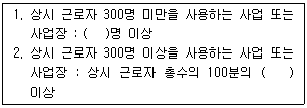
- 10, 20
- 10, 30
- 30, 10
- 30, 20
(정답률: 63%)
89. 근로자직업능력개발법령상 다음 ( )에 알맞은 숫자를 옳게 연결한 것은?
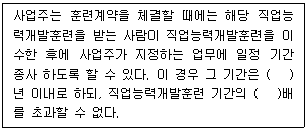
- 3, 2
- 3, 3
- 5, 2
- 5, 3
(정답률: 64%)
90. 다음 중 근로기준법상 1순위로 변제되어야 하는 채권은?
- 우선권이 없는 조세·공과금
- 최종 3개월분의 임금
- 질권·저당권에 의해 담보된 채권
- 최종 3개월분의 임금을 제외한 임금채권 전액
(정답률: 63%)
91. 헌법이 보장하는 근로3권의 설명으로 틀린 것은?
- 단결권은 근로조건의 향상을 도모하기 위하여 근로자와 그 단체에게 부여된 단결체 조직 및 활동, 가입, 존립보호 등을 위한 포괄적 개념이다.
- 단결권이 근로자 집단의 근로조건의 향상을 추구하는 주체라면, 단체교섭권은 그 목적 활동이고, 단체협약은 그 결실이라고 본다.
- 단체교섭의 범위는 근로자들의 경제적·사회적 지위향상에 관한 것으로 단체교섭의 주체는 원칙적으로 근로자 개인이 된다.
- 단체행동권의 보장은 개개 근로자와 노동조합의 민·형사상 책임을 면제시키는 것이므로 시민법에 대한 중대한 수정을 의미한다.
(정답률: 51%)
92. 남녀고용평등과 일·가정 양립에 관한 법령상 상시 300명 미만의 근로자를 사용하는 사업 또는 사업장에서의 배우자 출산휴가에 관한 설명으로 틀린 것은?
- 사업주는 근로자가 배우자 출산휴가를 청구하는 경우에 10일의 휴가를 주어야 한다.
- 사용한 배우자 출산휴가기간은 무급으로 한다.
- 배우자 출산휴가는 근로자의 배우자가 출산한 날부터 90일이 지나면 청구할 수 없다.
- 배우자 출산휴가는 1회에 한정하여 나누어 사용할 수 있다.
(정답률: 70%)
93. 파견근로자 보호 등에 관한 법령상 근로자파견사업을 하여서는 아니 되는 업무에 해당하는 것을 모두 고른 것은?
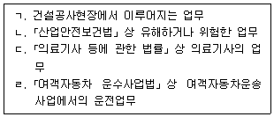
- ㄱ, ㄹ
- ㄱ, ㄴ, ㄷ
- ㄴ, ㄷ, ㄹ
- ㄱ, ㄴ, ㄷ, ㄹ
(정답률: 62%)
94. 고용정책 기본법상 고용노동부장관이 실시하는 실업대책사업에 해당하지 않는 것은?
- 실업자 가족의 의료비 지원
- 고용촉진과 관련된 사업을 하는 자에 대한 대부(貸付)
- 고용재난지역의 선포
- 실업자에 대한 공공근로사업
(정답률: 55%)
95. 직업안정법령상 용어 정의로 틀린 것은?
- "고용서비스”란 구인자 또는 구직자에 대한 고용정보의 제공, 직업소개, 직업지도 또는 직업능력개발 등 고용을 지원하는 서비스를 말한다.
- "직업안정기관"이란 직업소개, 직업지도 등 직업안정업무를 수행하는 지방고용노동행정기관을 말한다.
- "모집"이란 근로자를 고용하려는 자가 취업하려는 사람에게 피고용인이 되도록 권유하거나 다른 사람으로 하여금 권유하게 하는 것을 말한다.
- "근로자공급사업"이란 공급계약에 따라 근로자를 타인에게 사용하게 하는 사업을 말하는 것으로서, 파견근로자보호등에 관한 법률에 의한 근로자파견사업도 포함한다.
(정답률: 54%)
96. 근로자직업능력 개발법령상 훈련방법에 따른 구분에 해당하지 않는 것은?
- 집체훈련
- 현장훈련
- 양성훈련
- 원격훈련
(정답률: 62%)
97. 근로자퇴직급여 보장법령의 내용으로 옳지 않은 것은?
- 상시 4명 이하의 근로자를 사용하는 사업 또는 사업장에는 퇴직급여제도를 설정하지 않아도 된다.
- 퇴직연금제도란 확정급여형퇴직연금제도, 확정기여형퇴직연금제도 및 개인형퇴직연금제도를 말한다.
- 4주간을 평균하여 1주간의 소정근로시간이 15시간 미만인 근로자는 퇴직급여제도를 설정하지 않아도 된다.
- 퇴직급여제도를 설정하는 경우에 하나의 사업에서 급여 및 부담금 산정방법의 적용 등에 관하여 차등을 두어서는 아니 된다.
(정답률: 62%)
98. 고용보험법상 고용보험심사위원회의 재심사 청구에서 재심사 청구인의 대리인이 될 수없는 자는?
- 청구인인 법인의 직원
- 청구인의 배우자
- 청구인이 가입한 노동조합의 위원장
- 변호사
(정답률: 57%)
99. 근로기준법령상 임금에 관한 설명으로 틀린 것은?
- 사용자의 귀책사유로 휴업하는 경우에 사용자는 휴업기간 동안 그 근로자에게 평균임금의 100분의 80 이상의 수당을 지급하여야 한다.
- 단체협약에 특별한 규정이 있는 경우에는 임금의 일부를 공제할 수 있다.
- 임금은 매월 1회 이상 일정한 날짜를 정하여 지급하는 것이 원칙이다.
- 임금채권은 3년간 행사하지 아니하면 시효로 소멸한다.
(정답률: 62%)
100. 채용절차의 공정화에 관한 법령상 500만원 이하의 과태료 부과사항에 해당하지 않는 것은?
- 채용광고의 내용 또는 근로조건을 변경한 구인자
- 지식재산권을 자신에게 귀속하도록 강요한 구인자
- 채용서류 보관의무를 이행하지 아니한 구인자
- 그 직무의 수행에 필요하지 아니한 개인정보를 기초심사자료에 기재하도록 요구하거나 입증자료로 수집한 구인자
(정답률: 46%)